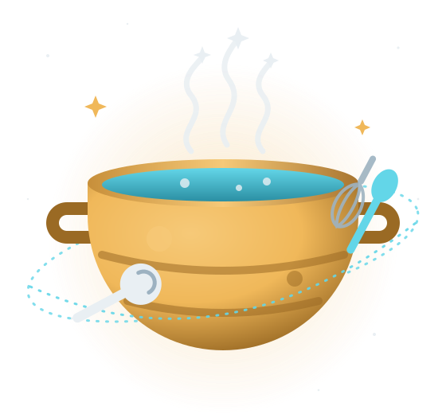

Missão
Ensinar qualquer tripulante a fazer uma refeição de verdade, mesmo a anos-luz da feira mais próxima.
Receitas de toda a galáxia, ensinadas na prática. Escolha um prato, cozinhe cada passo da receita num minigame e mande o resultado para o inventário do seu personagem do Vortex.

Galacta cozinhou em cargueiros, estações de mineração e postos de fronteira por sessenta ciclos. Aprendeu um prato em cada porto e nunca guardou nenhum para si. Hoje ela mantém o caderno aberto: qualquer tripulante pode consultar uma receita, cozinhar junto com ela e escrever a sua.
Ensinar qualquer tripulante a fazer uma refeição de verdade, mesmo a anos-luz da feira mais próxima.
Ser o caderno de receitas que toda nave carrega, da cozinha de bordo ao acampamento num planeta sem nome.
Os pratos da Vó vêm da TheMealDB, uma base pública de receitas do mundo todo, traduzidos aqui. Os da tripulação foram cadastrados neste caderno.
Escreva a receita e monte a aula: a ordem dos passos e o minigame de cada um. Ela entra no caderno na hora e fica salva neste navegador.